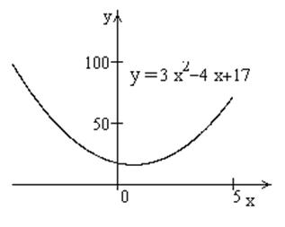
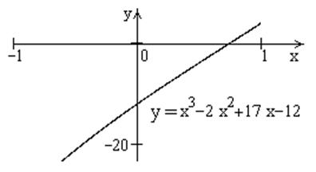

П19.1 №15
Найдите интервал, в котором находятся корни
многочлена .
РЕШЕНИЕ:
Полученный квадратный трехчлен имеет положительный
коэффициент у старшего члена (на графике ветви параболы направлены вверх) и
отрицательный дискриминант (график не имеет точек пересечения с осью  ), значит, все значения квадратного
трехчлена лежат выше оси и
), значит, все значения квадратного
трехчлена лежат выше оси и  при любых
при любых  .
.
), значит, все значения квадратного
трехчлена лежат выше оси и при любых .
Из этого следует, что  возрастает и имеет не более одного
корня. Заметим, что , а , т.е. корень многочлена . Отметим, что корнем будет
иррациональное число, так как на интервале не
содержится целых чисел, которые были бы делителем свободного члена 12 исходного
многочлена.
возрастает и имеет не более одного
корня. Заметим, что , а , т.е. корень многочлена . Отметим, что корнем будет
иррациональное число, так как на интервале не
содержится целых чисел, которые были бы делителем свободного члена 12 исходного
многочлена.
возрастает и имеет не более одного
корня. Заметим, что , а , т.е. корень многочлена . Отметим, что корнем будет
иррациональное число, так как на интервале не
содержится целых чисел, которые были бы делителем свободного члена 12 исходного
многочлена.